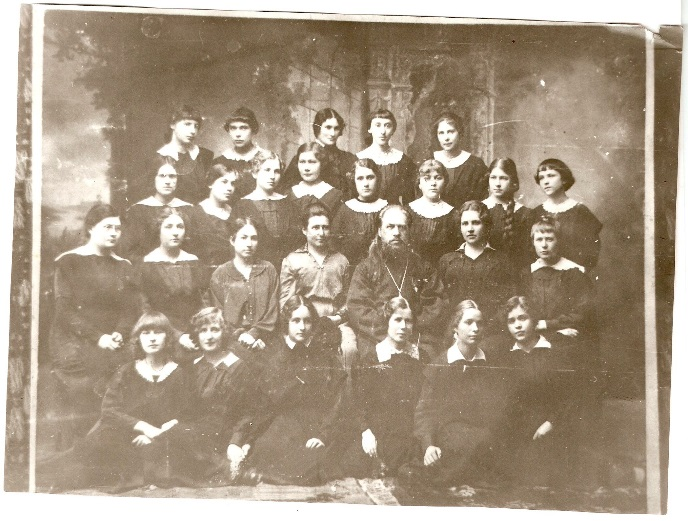
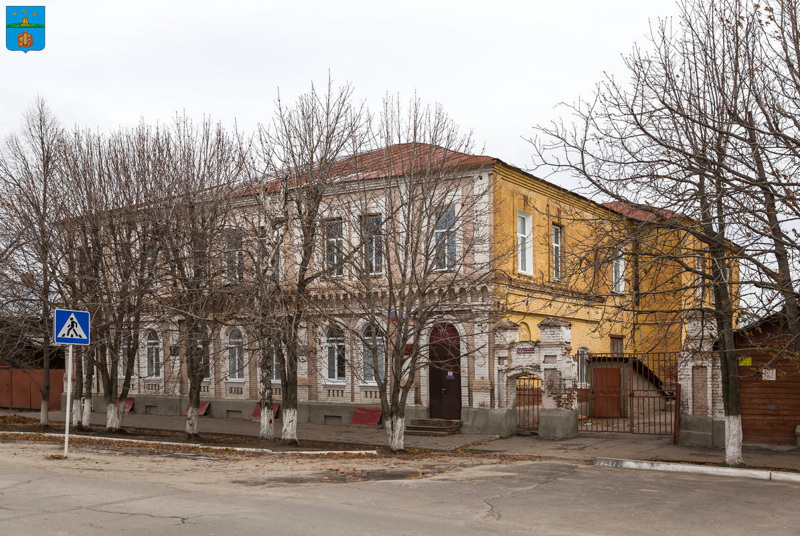

Борисоглебская школа №9, расположенная в самом центре города, является одним из старейших учебных заведений.
Изначально это была частная женская гимназия Ефросиньи Васильевны Забниной.
Открытая в 1907 году, она находилась в здании, расположенном на перекрёстке улиц Советской и Юбилейной.
В 1911 г. гимназия была уже пятиклассным, а в 1912 г. -семиклассным учебным заведением с правами правительственных гимназий.
В 1914 г. был открыт восьмой дополнительный класс с двумя специальностями: русский язык и математика.
Окончание его давало право на получение звания учительницы. Гимназия содержалась на средства владелицы Е.В. Забниной, а также городских органов управления и уездного земства.
С 1910 г. Е.В. Забнина каждый год обращалась в городскую управу с ходатайствами о субсидии ее учебного заведения.
Так, 20 сентября 1910 г. дума постановила выдать на 1911 г. субсидию в размере 250 руб. с условием принять на обучение 5 девочек из малообеспеченных семей города. В 1912 г. кредит был увеличен до 1000 руб. с условием освобождения 10 учениц от платы за обучение. Управа постановила сделать это пособие постоянным. Борисоглебское уездное земство на заседании 2 октября 1912 г. также решило дать гимназии Забниной субсидию в 300 руб. и ходатайствовать перед губернским земством о дополнительных средствах в 600 руб.
В1911 /12 учебном году в частном заведении Е.В. Забниной обучались в шести классах 186 учениц.
Преподавались: Закон Божий, арифметика, русский язык, алгебра, геометрия, география, история, естественная история, физика, немецкий и французский языки, рисование, черчение, пение, рукоделие, гимнастика. Преподавали: А.П. Рождественская, Т.М. Глазунова, С.В. Оржевская, •Л.Н. Гаврилова, Л.В. Волесская, В.В. Волесская, О.В. Феофанова, О.П. Попова, Г.Ф. Доломанова, А.Ф. Недзвецкий, Д.П. Клименты; в. А.Ф. Сыкора, Е.С. Павлова, А.Ф. Мельникова. В гимназии была ученическая библиотека, кабинеты наглядных пособий. В годы первой мировой войны с 1 августа 1914 по 3-июля 1915 г. при гимназии действовал лазарет, через который прошло 184 раненых. Устраивались благотворительные базары, выставки ученических работ в пользу раненых. В 1915 году учебное заведение переведено в новое здание, расположенное по улице Проезжей (ныне ул. Бланская 56). Вот как об открытии этого здания гимназии писала газета «Борисоглебское эхо»: «Классы просторны и помещены в двух этажах. Оба этажа пронизаны широкими коридорами. Здание гимназии оборудовано электрическим освещением». В далёком 1915 году учебное заведение посещало более 400 учениц. Согласно действовавшим тогда правилам, учащиеся обязаны носить форму установленного образца, причём не только в гимназии, но и за её пределами. На улицах Борисоглебска учениц частной женской гимназии Забниной можно было отличить от остальных по темно-синему платью с чёрным фартуком. После Октябрьской революции школа стала общеобразовательной, а в 1923 году ей было присвоено имя выдающегося советского дипломата В.В.Воровского.
Накануне Великой Отечественной войны школа была принята в систему Народного Комиссариата путей сообщения и стала называться железнодорожной школой № 47 им. В.В.Воровского. Годы Великой Отечественной войны были особенными для всего советского народа. Непростыми они стали и для коллектива школы. Многие выпускники ушли сражаться с фашистами. В настоящее время установлено 50 учеников школы, погибших на фронте. Их имена занесены на мемориальные доски. В военные годы в школьном здании расположился эвакуационный госпиталь № 1918, а занятия с учащимися проводились на втором этаже железнодорожного вокзала. В свободное от учёбы время учащиеся выезжали в колхозы Борисоглебского и Терновского районов, принимали участие в уборке урожая и заготовке сена. Коллектив школы в течении 2-х лет шефствовал над одной из палат госпиталя №1918. Работа коллектива школы в годы войны была отмечена Почетной Грамотой Народного Комиссариата путей сообщения. С 1 сентября 1944 года школа была преобразована в женскую железнодорожную среднюю школу № 47. В послевоенные годы именно она становится центром методической работы Поворинского отделения ЮВЖД. 1 сентября 1960 года школа получила особый статус: была преобразована в школу продленного дня № 61, а с 1 сентября 1963 года стала известна горожанам как школа № 9. Так она называется и в настоящее время.
Силён школьный коллектив своими традициями. А они уходят корнями в ту пору, когда у истоков формирования школы нового типа, школы продлённого дня была поставлена директор Мария Павловна Петрова. Потом её сменила «николаевская династия»: Анатолий Николаевич Кубахов, Валентин Николаевич Егоров, Иван Николаевич Фёдоров, Николай Кондратьевич Капрусов. Большой вклад в развитие учебного заведения внесла бывший директор школы Игнатьева Татьяна Васильевна. В настоящее время в школе улучшается материально-техническое оснащение, взят курс на преобразование учебного заведения в передовое, инновационное. Школа гордится своими выпускниками, среди которых есть люди самых разных профессий. Учениками нашей школы были Чернова Нина Михайловна – Герой Социалистического труда, Золотухин Михаил Петрович – Заслуженный учитель РСФСР, Немченко Владимир Семенович – доктор экономических наук, Рябушкин Павел Егорович – почетный гражданин города Старый Оскол, Мызников Василий Владимирович – почетный гражданин города Борисоглебска, Фёдор Кадонцев - чемпион мира по кикбоксингу.